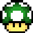

3 Coin Katas
3.1 Coin Kata (coin-1)
 Tip: The default value of a coin is 10.
read
Code a game with 20 vaulable gold coins that do not respawn.
code
#lang adventure-mario (mario-game #:coin-list (list (basic-coin #:sprite goldcoin-sprite #:value 100 #:amount-in-world 20 #:respawn? #f)))
3.2 Coin Kata (coin-2)
read
Code a game with cheap copper coins, more valuable silver coins, and very valuable gold coins.
code
#lang adventure-mario (define (copper-coin) (basic-coin #:sprite coppercoin-sprite #:name "Copper Coin" #:value 1)) (define (silver-coin) (basic-coin #:sprite silvercoin-sprite #:name "Silver Coin" #:value 25)) (define (gold-coin) (basic-coin #:sprite goldcoin-sprite #:name "Gold Coin" #:value 50)) (mario-game #:coin-list (list (copper-coin) (silver-coin) (gold-coin)))
3.3 Coin Kata (coin-3)
Tip: A very rare coin might only appear once.
read
Code a game with a very rare, trick gold coin. Make the coin worth -1000 and spawn an enemy when picked up.
code
#lang adventure-mario (define (my-trick-coin) (basic-coin #:name "Gold Coin" #:sprite goldcoin-sprite #:value -1000 #:amount-in-world 1 #:respawn? #f #:on-pickup (spawn-on-current-tile (basic-enemy #:position (posn 0 0) #:tile 0)))) (mario-game #:coin-list (list (my-trick-coin)))
3.4 Coin Kata (coin-4)
read
Code a game with a extremely rare and valuable gold coin. When the coin is picked up, spawn a cutscene with a gold coin and some text.
code
#lang adventure-mario (define (my-special-coin) (basic-coin #:name "Gold Coin" #:sprite goldcoin-sprite #:value 1000 #:amount-in-world 1 #:respawn? #f #:on-pickup (spawn (page goldcoin-sprite "This looks valuable.")))) (mario-game #:coin-list (list (my-special-coin)))
3.5 Coin Kata (coin-5)
Tip: Be careful with how much dialog you put on 1 line. It might be too much.
read
Code a game with 15 coins that do not respawn and an NPC. Give a collect quest where you have to collect 100 points for a reward.
code
#lang adventure-mario (define (my-coin) (basic-coin #:amount-in-world 15 #:respawn? #f)) (define (npc-with-coin-quest) (basic-npc #:dialog (list "I've lost my coins..." "...100 points worth!" "Can you find them for me?") #:quest-list (list (collect-quest #:collect-amount 100 #:reward-amount 50)))) (mario-game #:npc-list (list (npc-with-coin-quest)) #:coin-list (list (my-coin)))